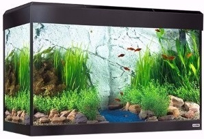
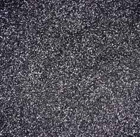
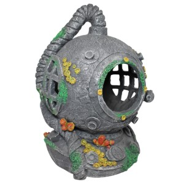
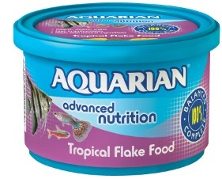

These are the crucial elements any fish owner needs to kickstart their fishtank.
Fluval Roma 125 Litre Aquarium with LED Lighting Black Finish Fluval's range of Roma designer aquariums have been re-launched with LED lighting. The best selling range offers something for every type of fish keeper with its contemporary design and clean, simple lines. The new Roma aquariums come equipped with energy efficient LED lighting, featuring a bright daylight spectrum to help support plant growth and enhance fish colours to truly transform your aquarium. Roma comes complete with the essential equipment needed to set up your aquarium including a Fluval filter and heater.Suitable for new and experienced hobbyists. Approximate Dimensions (Product): 50 x 80 x 35cm Click image for link to purchase |
|---|
Black Sand Fishponds Fishshops decorative aquarium sand is the ideal way to enhance the appearance of your fish tank. Suitable for all types of aquarium set-ups including coldwater, tropical and saltwater. Fishponds Fishshops decorative aquarium sand is also the perfect planting medium due to its finer size, and the increased surface area allows for improved anaerobic activity.Suitable for new and experienced hobbyists. Approximate Dimensions (Product): 40 x 30 x 15cm Click image for link to purchase |
|---|
Aqua One Diver Helmet Large Aquarium Ornament Aqua One is a leading supplier of quality aquariums and accessories that not only deliver the best possible environment for fish but also add style and elegance to your home. This Aqua One Ornament is made resin and hand painted, to create a natural look. Your fish will love hiding in these spaces, helping to create a natural environment. Its hand painted and made from a durable polyresin that is suitable for all freshwater and saltwater aquariums.Suitable for new and experienced hobbyists. Approximate Dimensions (Product): 38 x 25 x 24cm Click image for link to purchase |
|---|
Aquarian Tropical Fish Flake Food 200g At Aquarian, they understand the simple joys and relaxation of fishkeeping, for over 40 years Aquarian has supported families to provide the right care for their fish with a range of complete fish foods and water treatments helping you to care for your fish, both inside and out. Feed your tropical fish a diet that is specially formulated to help promote healthy growth, colour and vitality with Aquarian Tropical Fish Flakes Fish Food, Aquarian Tropical Fish Flakes Fish Food is a complete diet ideal for all types of tropical fish including Tetras, Angelfish, Discus, Barbs and Guppies.Suitable for new and experienced hobbyists. Approximate Dimensions (Product): 11.43 x 13.2 x 13.2cm Click image for link to purchase |
|---|